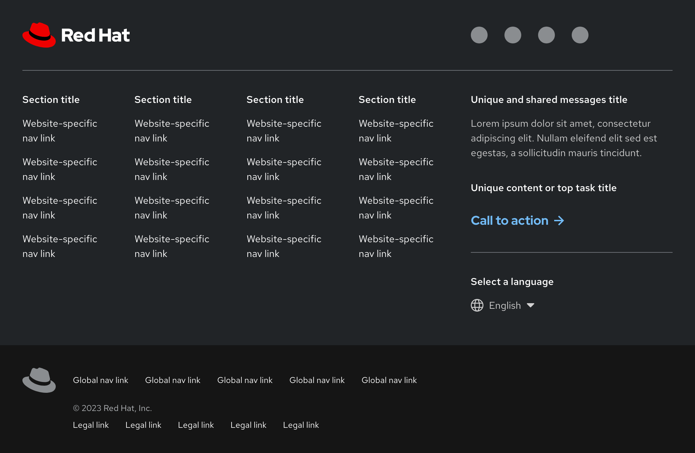
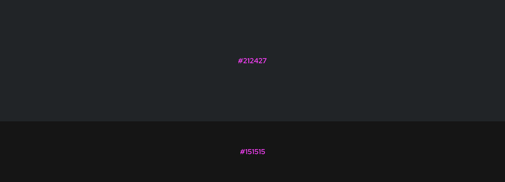
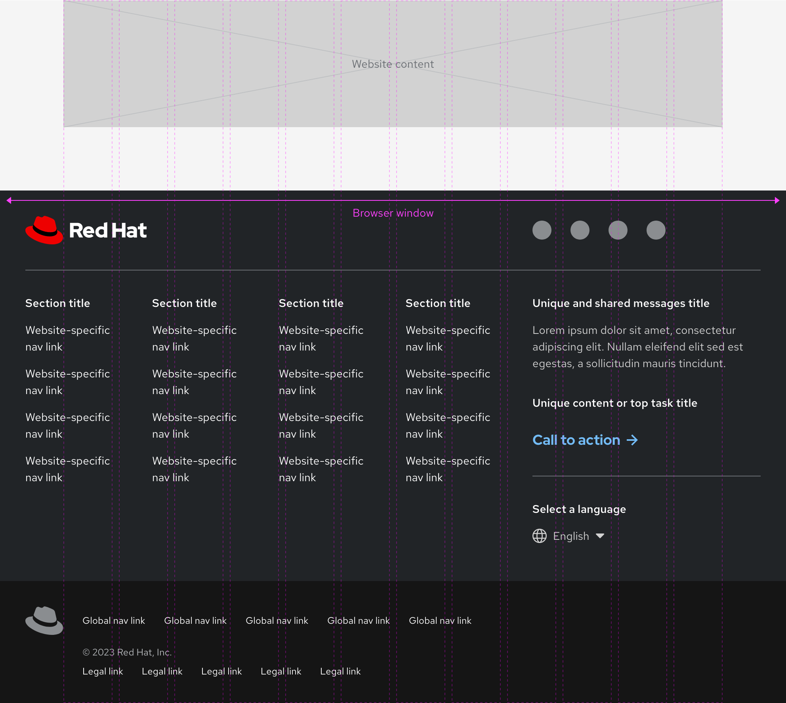

Footer
Elements in the modular and universal footers are high in contrast so they stand out to a visitor and meet accessibility guidelines. The footer looks similar in style to the Primary navigation for a consistent user experience across websites.

Color
The modular footer background color is slightly lighter than the universal footer background color. This separation helps to distinguish the footers from each other.

Layout
The footer spans the entire width of the browser window at all screen sizes.

CSS Custom Properties
| CSS Property | Description | Default |
|---|---|---|
--rh-footer-icon-color |
#8a8d90 |
|
--rh-footer-icon-color-hover |
#b8bbbe |
|
--rh-footer-border-color |
#6a6e73 |
|
--rh-footer-accent-color |
#e00 |
|
--rh-footer-section-side-gap |
16px |
|
--rh-footer-links-gap |
8px |
|
--rh-footer-link-header-font-size |
0.875em |
|
--rh-footer-nojs-min-height |
750px |
CSS Shadow Parts
base-
main footer element, containing all footer content
header-
footer header, typically containing main logo and social links
header-primary-
primary footer header content, e.g. main logo
header-secondary-
secondary footer header content, e.g. social links
logo-
main page or product logo container
social-links-
social links container
<rh-footer-links> main-
main content container.
main-primary-
container for main footer links
links-
container for main footer links
links-accordion-header-
mobile links accordion header element
links-accordion-panel-
mobile links panel container element
main-secondary-
container fro prose or promotional content
Related elements or patterns
Feedback
To give feedback about anything on this page, contact us.
Red Hat legal and privacy links
- About Red Hat
- Jobs
- Events
- Locations
- Contact Red Hat
- Red Hat Blog
- Diversity, equity, and inclusion
- Cool Stuff Store
- Red Hat Summit
Red Hat legal and privacy links